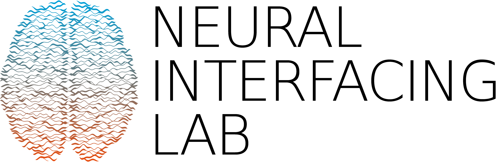

Welcome to the Neural Interfacing Lab in the Department for Neurosurgery at Maastricht University. We are a multidisciplinary team investigating Brain-Computer Interfaces and closed-loop neural interfaces though the application of advanced Machine Learning.
Recent News
{% capture now %}{{'now' | date: '%s' | minus: 63072000 %}}{% endcapture %}
-
{% for new in site.data.news %}
{% capture date %}{{new.date | date: '%s' | plus: 0 %}}{% endcapture %}
{% if date > now %}
- {{ new.details }} {% endif %} {% endfor %}
Latest publications
{% for publication in site.publications %}
{% endfor %}
Neural Interfacing Lab
Department for Neurosurgery
Maastricht University
Universiteisingel 50, 6229 ER Maastricht, The Netherlands